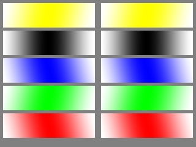
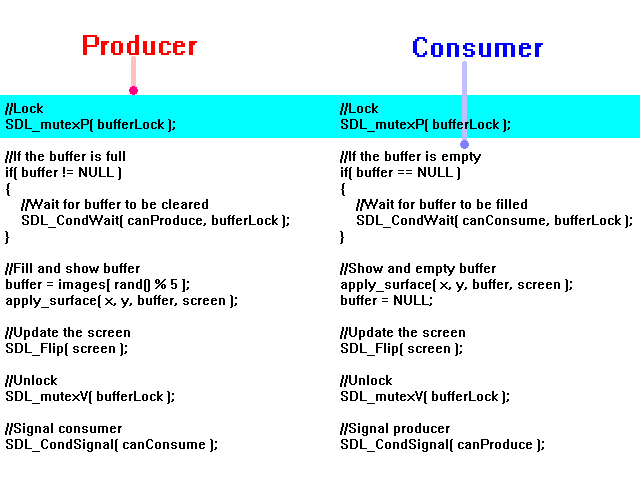
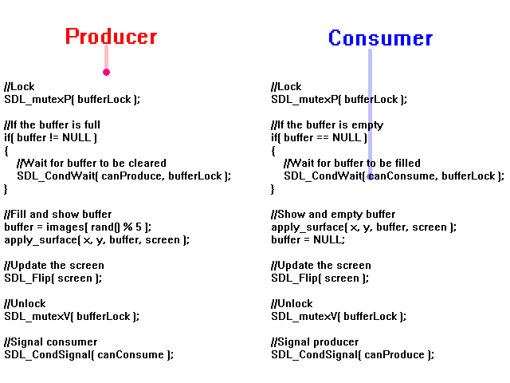
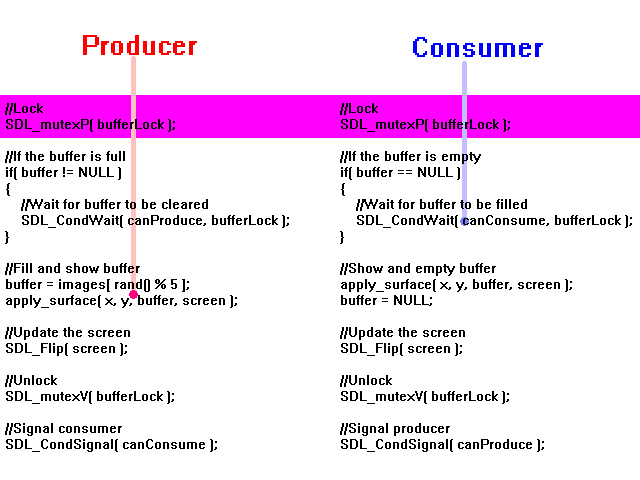
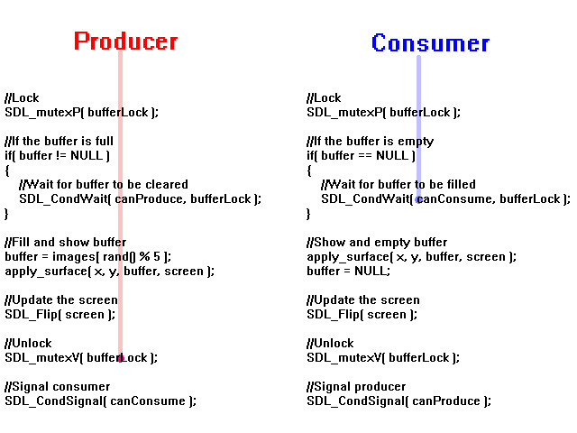
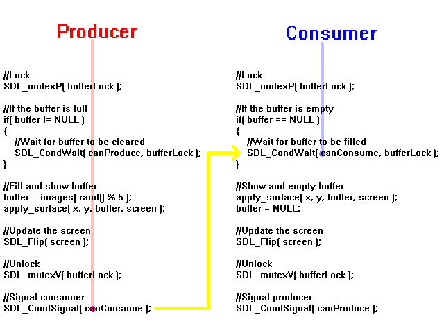
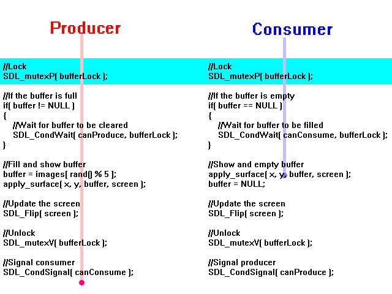

这里我们将使用互斥锁和条件变量来进行更加高级的线程同步。
假如你错过了“信号量”那一课，让我重新陈述一遍：
本课中，我们将在不同的线程中运行视频函数。你绝对不应该在真实应用中这么做。这是坏的软件设计并且在某些情况会导致你的操作系统变得不稳定。我们这里这么做的唯一原因是这是一个小程序并且不会出任何错。我们这里这么做仅仅是作为一个简单的演示程序来演示互斥锁和条件变量。现在开始本课内容。
在本课中，我们将使用一个"生产者（producer）"线程来从5个表面中选取一个并存储在缓冲区中，然后在屏幕左侧显示"生成的"表面。
接着我们将有一个"消费者（consumer）"线程来在屏幕右侧显示缓冲区的表面，随后清空缓冲区。
关键在于：不像前面一课中5次blit是每1/5秒按顺序进行的，在这个程序中，生产者随机地生产5次，并且消费者随机地消费5次。
在上一课中我们使用了信号量来防止两个线程同时操作屏幕。这里我们将要使用互斥锁。一个互斥锁就是个二元信号量，或者一个一次仅允许一个线程通过的信号量。实际上，“信号量”那一课可以改用互斥锁来重新做一遍。你需要做的就是把信号量改为互斥锁并且替换锁定/解锁的函数。
由于线程是随机地工作的，并且它们彼此独立，仅仅使用一个互斥锁是不够的。如果消费者尝试消费而缓冲区是空的怎么办呢？或者是，生产者尝试生产但缓冲区已经满了呢？这就是条件变量发挥作用的地方了。
本课中，我们将在不同的线程中运行视频函数。你绝对不应该在真实应用中这么做。这是坏的软件设计并且在某些情况会导致你的操作系统变得不稳定。我们这里这么做的唯一原因是这是一个小程序并且不会出任何错。我们这里这么做仅仅是作为一个简单的演示程序来演示互斥锁和条件变量。现在开始本课内容。
在本课中，我们将使用一个"生产者（producer）"线程来从5个表面中选取一个并存储在缓冲区中，然后在屏幕左侧显示"生成的"表面。
接着我们将有一个"消费者（consumer）"线程来在屏幕右侧显示缓冲区的表面，随后清空缓冲区。
关键在于：不像前面一课中5次blit是每1/5秒按顺序进行的，在这个程序中，生产者随机地生产5次，并且消费者随机地消费5次。
在上一课中我们使用了信号量来防止两个线程同时操作屏幕。这里我们将要使用互斥锁。一个互斥锁就是个二元信号量，或者一个一次仅允许一个线程通过的信号量。实际上，“信号量”那一课可以改用互斥锁来重新做一遍。你需要做的就是把信号量改为互斥锁并且替换锁定/解锁的函数。
由于线程是随机地工作的，并且它们彼此独立，仅仅使用一个互斥锁是不够的。如果消费者尝试消费而缓冲区是空的怎么办呢？或者是，生产者尝试生产但缓冲区已经满了呢？这就是条件变量发挥作用的地方了。
SDL_Surface *images[ 5 ] = { NULL, NULL, NULL, NULL, NULL };
SDL_Surface *buffer = NULL;
缓冲区包含了生产者"生产"的表面。当生产者生产了一个表面后，它就指向在程序开始时加载好的5个表面中的一个。
我只是想解除任何关于“缓冲区是什么”以及“它存储什么”的疑虑。
我只是想解除任何关于“缓冲区是什么”以及“它存储什么”的疑虑。
//将要使用的线程 SDL_Thread *producerThread = NULL; SDL_Thread *consumerThread = NULL; //保护性互斥锁 SDL_mutex *bufferLock = NULL; //条件变量 SDL_cond *canProduce = NULL; SDL_cond *canConsume = NULL;
这里我们有线程和互斥锁。互斥锁将防止缓冲区和/或屏幕被两个线程同时操纵。
然后我们有条件变量，指示何时生产者可以生成以及消费者可以消费。
然后我们有条件变量，指示何时生产者可以生成以及消费者可以消费。
bool init()
{
//初始化所有SDL子系统
if( SDL_Init( SDL_INIT_EVERYTHING ) == -1 )
{
return false;
}
//设置屏幕
screen = SDL_SetVideoMode( SCREEN_WIDTH, SCREEN_HEIGHT, SCREEN_BPP, SDL_SWSURFACE );
//如果设置屏幕出现问题
if( screen == NULL )
{
return false;
}
//创建互斥锁
bufferLock = SDL_CreateMutex();
//创建条件变量
canProduce = SDL_CreateCond();
canConsume = SDL_CreateCond();
//设置窗口标题
SDL_WM_SetCaption( "Producer / Consumer Test", NULL );
//如果一切初始化良好
return true;
}
在我们可以使用互斥锁或者条件变量之前，我们必须创建它们。我们通过在我们的
init()函数中调用SDL_CreateMutex() 和 SDL_CreateCond()来创建。
int producer( void *data )
{
//blit的坐标
int y = 10;
//设定随机数种子
srand( SDL_GetTicks() );
//生产
for( int p = 0; p < 5; p++ )
{
//等待
SDL_Delay( rand() % 1000 );
//生产
produce( 10, y );
//向下移动
y += 90;
}
return 0;
}
int consumer( void *data )
{
//blit坐标
int y = 10;
for( int p = 0; p < 5; p++ )
{
//等待
SDL_Delay( rand() % 1000 );
//消费
consume( 330, y );
//向下移动
y += 90;
}
return 0;
}
这里我们有生产者/消费者的线程函数。它们以随机的时间间隔生产/消费5次。
void produce( int x, int y )
{
//锁定
SDL_mutexP( bufferLock );
//如果缓冲区满了
if( buffer != NULL )
{
//等待缓冲区被清空
SDL_CondWait( canProduce, bufferLock );
}
//填充并显示缓冲区
buffer = images[ rand() % 5 ];
apply_surface( x, y, buffer, screen );
//更新屏幕
SDL_Flip( screen );
//解锁
SDL_mutexV( bufferLock );
//向消费者发信号
SDL_CondSignal( canConsume );
}
void consume( int x, int y )
{
//锁定
SDL_mutexP( bufferLock );
//如果缓冲区是空的
if( buffer == NULL )
{
//等待缓冲区被填充
SDL_CondWait( canConsume, bufferLock );
}
//显示并清空缓冲区
apply_surface( x, y, buffer, screen );
buffer = NULL;
//更新屏幕
SDL_Flip( screen );
//解锁
SDL_mutexV( bufferLock );
//向生产者发信号
SDL_CondSignal( canProduce );
}
这里是我们的生产者/消费者函数，都随机地被调用5次。它们是如何工作的？让我们看看这个范例情形：
假设消费者函数是首先被调用的。它进入函数体并调用
然后生产者尝试进入但无法完成，因为互斥锁是被锁定的状态。互斥锁确保了缓冲区和/或屏幕不会被两个线程同时操纵。
但是假如缓冲区是空的。现在消费者调用了
现在生产者可以进入并进行了生产。
当生产者完成生产后，它调用了
那就是为什么我们要调用
既然
这两个线程不仅避开了互相的路，它们还能互相等待和发送信号，这多亏了互斥锁/条件变量。
假设消费者函数是首先被调用的。它进入函数体并调用
SDL_mutexP()锁定了互斥锁。
然后生产者尝试进入但无法完成，因为互斥锁是被锁定的状态。互斥锁确保了缓冲区和/或屏幕不会被两个线程同时操纵。

但是假如缓冲区是空的。现在消费者调用了
SDL_CondWait()，它会让这个线程等待"canConsume"条件。它也解锁了互斥锁。

现在生产者可以进入并进行了生产。

当生产者完成生产后，它调用了
SDL_mutexV()来解锁了互斥锁。但是消费者线程还在睡眠。

那就是为什么我们要调用
SDL_CondSignal()来向等待着"canConsume"条件的消费者发信号。

既然
SDL_CondWait()收到了信号，消费者就醒来，互斥锁被重新加锁，并且现在消费者开始了消费。

这两个线程不仅避开了互相的路，它们还能互相等待和发送信号，这多亏了互斥锁/条件变量。
void clean_up()
{
//消除互斥锁
SDL_DestroyMutex( bufferLock );
//消除条件变量
SDL_DestroyCond( canProduce );
SDL_DestroyCond( canConsume );
//释放表面
for( int i = 0; i < 5; i++ )
{
SDL_FreeSurface( images[ i ] );
}
//退出SDL
SDL_Quit();
}
就如一直做的那样，不要忘了释放任何动态分配的东西。这里我们用
SDL_DestroyMutex() 和 SDL_DestroyCond()释放了我们的互斥锁和条件变量。